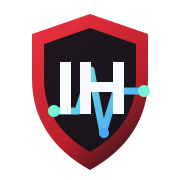
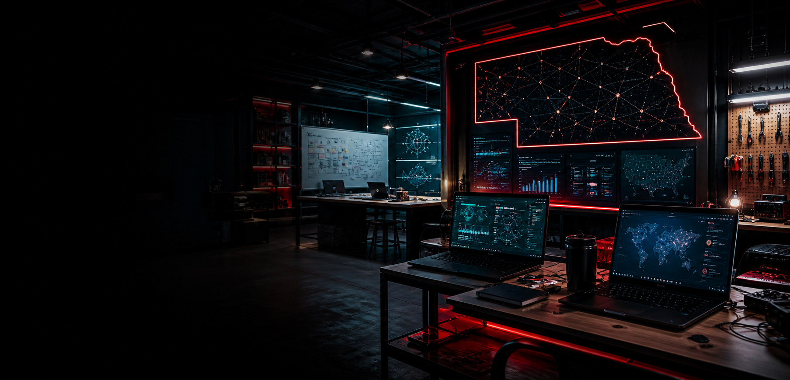

Youth and Student Programs
After-school clubs, classroom-friendly labs, and mentor-supported activities for emerging technology talent.

iHack NebraskaCommunity cyber education for Nebraska
iHackNebraska is a statewide cybersecurity and technology initiative focused on community collaboration, hands-on education, after-school clubs, and pathways into Nebraska's technology workforce.

Community education, digital resilience, school clubs, and hands-on technical learning.
A statewide community connecting talent, mentors, schools, and local organizations.
Curious learners, security practitioners, makers, educators, and business leaders welcome.
The mission
iHackNebraska brings together students, professionals, businesses, educators, and technology enthusiasts to learn by doing. The initiative creates a collaborative environment where mentorship, community education, and practical skill-building can thrive.
By combining education, community outreach, after-school programs, and practical workshops, iHackNebraska aims to help Nebraska become a regional leader in cybersecurity talent and readiness.
After-school clubs, classroom-friendly labs, and mentor-supported activities for emerging technology talent.
Practical education that helps local organizations understand technology risk, improve basics, and build confidence.
Volunteer technical projects for non-profits, small businesses, schools, and civic partners across Nebraska.
How it works
Beginner-friendly and advanced workshops covering security fundamentals, digital citizenship, troubleshooting, and practical technology skills.
Community labs, team challenges, project nights, and guided practice sessions that help people learn together.
Projects and readiness support for local organizations that need practical help navigating emerging threats.
Offerings
Beginner-to-advanced workshops that turn curiosity into working skill through guided labs, tool practice, and mentor-led learning.
Structured learning environments for teamwork, problem solving, systems thinking, and digital resilience.
Practical guidance that helps local organizations understand risk, harden basics, and prepare for common threats.
A collaborative space for learning together, building tools, helping community partners, and growing Nebraska's technology culture.
Community
iHackNebraska is built around collaboration: people learning together, mentoring one another, starting clubs, and applying technical skill to real community needs.
Join the DiscordHelp shape it